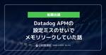

LIVESENSE ENGINEER BLOG
https://made.livesense.co.jp/
リブセンスエンジニアの活動や注目していることを発信しています
フィード

Datadog APMの設定ミスのせいでメモリリークしていた話 3
3
LIVESENSE ENGINEER BLOG
こんにちは、かたいなかです。 最近、転職会議のあるサーバで発生していたメモリリークについて調査する機会がありました。 今回の記事ではメモリリークをどのように調査したか等をまとめます。 TL;DR 長時間稼働するrakeタスクのDatadog APMによる計装は避けましょう。 rakeがタスク内の処理でのspanが、rakeタスクを親とするトレースに追加され続け、メモリの使用量が大きくなってしまうためです。 ddtrace-rbではrakeの計装はデフォルトで有効なので注意。 状況 転職会議のとあるサーバで、使用しているメモリの量が継続的に増加していき、最終的にメモリが枯渇してサーバが再起動され…
3時間前

イベントを企画するときに考えていること
LIVESENSE ENGINEER BLOG
こんにちは、かたいなかです。 ここ数年で ゆるSRE勉強会 や yabaibuki.dev などのイベントの運営に何度か関わりました。 やったことの棚卸しも兼ねて、勉強会を企画しているときに何を考えているかを言語化したので、それを記事にまとめます。 イベント企画の全体の流れ 着想 参考書籍 アイデアの種となる情報を集める 集めた情報を深堀って整理する 寝かせる 思いついたアイデアを検証する 他人からみて楽しそうなイベントか 自分が熱意を持ち続けられるコンセプトになっているかどうか 実現が可能そうか 企画 運営体制を決める 集客のための目玉コンテンツを用意する PR まとめ イベント企画の全体の…
15日前
第二回yabaibuki.devの開催と自社勉強会を主催する目的
LIVESENSE ENGINEER BLOG
第二回yabaibuki.devはCI/CDをテーマに9/26開催です 前回のテーマは「メール」でした 自社勉強会を主催する目的 3年間でブログ記事が激増 今年は採用広報として活動の幅を広げてきた まとめ 第二回yabaibuki.devはCI/CDをテーマに9/26開催です livesense.connpass.com リブセンスでは、エンジニアの行動指針として「プロダクト × 自律共創 × ヤバい武器」を掲げており、その中で「ヤバい武器」にフォーカスしたのが yabaibuki.dev です。 日頃サービス運営をしていると、どうしても技術選定がコンサバになりがちです。もちろん安定した運用の…
24日前
DroidKaigi 2024の公式アプリにコントリビュートした話
LIVESENSE ENGINEER BLOG
knewのiOSエンジニアの伊原です。 先日、DroidKaigi 2024の公式アプリにコントリビュートしたので、その時の話を書きます。 コントリビューションに興味がある方の参考になれば幸いです。 DroidKaigi 2024の公式アプリ(iOS)はこちらです。 DroidKaigi 2024Ryoya Ito仕事効率化無料apps.apple.com PRについて 私が出したPRはこちらです。 github.com 内容はiOSアプリをデフォルトでダークモードに対応させるというシンプルなものです。 コントリビュートした経緯 私が普段開発しているknewのモバイルアプリでは、KMP(Kot…
1ヶ月前
メールはツラいよ！！波乱のメールサーバAWS移行を振り返ってみる
LIVESENSE ENGINEER BLOG
はじめに 概要 移行したメール基盤について AWS移行における制約事項 設計 機能要件の整理 移行過渡期の構成 移行後の構成 AWS移行前の準備 AWS上でのプロビジョニング OSレイヤでのプロビジョニング AWS移行中の課題 細かな設定値の調整とスケジュール AWS移行中に発生したトラブルの数々 AWS移行完了後の振り返り 普段からやっておいたほうが良いこと できればやっておいたほうが良いこと はじめに リブセンス インフラエンジニアのsheep_san_whiteです。お酒とロードバイクとランニングが好きなおじさんです。 リブセンスではオンプレミス環境からAWS環境への移行を進めてきました…
1ヶ月前
SRE NEXT 2024に行ったら気づきが多かった話
LIVESENSE ENGINEER BLOG
はじめに カンファレンス概要 カンファレンス参加前の背景 参加理由 得た気づきと感想 SREとは何かの気づき SREからの組織論 計測への気づき 登壇以外での気づき 今後 はじめに 技術部インフラグループの鈴木です。SRE NEXT 2024に行ってきました。実はテック系のカンファレンスに参加するのは初めてです。参加してみて大きな刺激を受けたので共有します。 カンファレンス概要 sre-next.dev 信頼性に関するプラクティスに深い関心を持つエンジニアのためのカンファレンスです。 同じくコミュニティベースのSRE勉強会である「SRE Lounge」のメンバーが中心となり運営・開催されます。…
2ヶ月前
RubyKaigiと開発合宿を一緒にやった話
LIVESENSE ENGINEER BLOG
はじめに RubyKaigiから帰って溜まってた仕事とか色々片付けてたらいつの間にか2ヶ月経ってた @ayumu838です。 時が経つのは早すぎて怖いですね。 だいぶ遅くなってしまいましたが、弊社のエンジニアメンバーで RubyKaigi に参加しました。加えて翌日から開発合宿を実施したので、その様子について書いていこうと思います。 この記事では、RubyKaigi・開発合宿それぞれの様子をお伝えするのと同時に、なぜ同時に実施したのか、実施してどうだったかという面について書きたいと思います。 RubyKaigiの振り返りの記事はこちら。 made.livesense.co.jp 開発合宿と一緒…
3ヶ月前
RubyKaigi2024 振り返り座談会
LIVESENSE ENGINEER BLOG
印象にのこったセッション Writing Weird Code Optimizing Ruby: Building an Always-On Production Profiler Unlocking Potential of Property Based Testing with Ractor Long journey of Ruby standard library An adventure of Happy Eyeballs RubyGems on ruby.wasm CSの知識と英語 Matzのキーノート 来年はMatz山 さいごに リブセンスでは転職ドラフト、マッハバイト、転職会議な…
3ヶ月前
【告知】yabaibuki.dev~メールの技術LT会~を開催します
LIVESENSE ENGINEER BLOG
こんにちは、技術部インフラグループの鈴木です。先日水沢競馬に行き、地方競馬場コンプしました。次は釜山競馬に行こうと思っています。 ところで、リブセンスでは長らくオフラインでの自社勉強会を開催していなかったのですが、久しぶりに開催することにしました！ livesense.connpass.com yabaibuki.devとは あなたの「ヤバい武器」をライトニングトークする会です。 リブセンスでは、エンジニアの行動指針として「プロダクト × 自律共創 × ヤバい武器」を掲げています。その中から「ヤバい武器」にフォーカスしたのが、この yabaibuki.dev です。 具体的には「この技術、ヤバ…
4ヶ月前
コミュニケーションコストが大きいチームの問題と付随する課題を解決した話
LIVESENSE ENGINEER BLOG
転職会議事業部でITエンジニアをしている@ishitan-livです。 早くも2024年が半年過ぎようとしていますね。 会社によっては上半期評価の時期だったりするので、何故かブログが乱立してるような気がしますがきっと気の所為ですね。 というわけで、前回はスクラムマスター研修で得た知見について書きましたが、今回は多くのチームが抱えていそうな問題を改善するためのヒントになればと思い、考えを共有します。 made.livesense.co.jp この記事にかかれていること3行まとめ 現在のチームの問題点 スクラムに関わる人数が多すぎた コミュニケーションコストが大幅に増えた 異なる性質のプロダクト領…
4ヶ月前
KMPをknewのiOSアプリに導入した際にハマったこと
LIVESENSE ENGINEER BLOG
knewでiOSエンジニアをしている伊原です。 knew.jp knewではモバイルアプリにKMPの導入を進めています。 KMPをiOSアプリに導入するにあたり、ハマった点がいくつかあったので備忘録として紹介します。 KMPとは？ KMPをknewに導入した経緯 KMPをどのように導入したか KMPをiOSアプリに導入した時にハマったこと XCFrameworkがローカルにない状態でiOSアプリをビルドするとエラーになる XCFrameworkの名前に_が含まれていると、App Store Connectへのアップロードが失敗する XCFrameworkのBundle Identifierに_…
4ヶ月前
立ち話から始まる業務改善、リブセンスのソリューションチーム
LIVESENSE ENGINEER BLOG
はじめに 立ち話から株価通知くん、爆誕 技術投資とソリューションチーム 越境とソリューションチーム 具体事例 株価通知くん メンション集約くん ユーザー管理システムの権限移譲 今後について はじめに 技術部インフラGの鈴木です。先日金沢競馬で最終レースで全てを取り返す体験をしたところ、久しぶりに生きていると感じました。 ところで、今回は以前こちらの勉強会にて話した内容をもとに、今年から始まった「会社に紐づくエンジニアリング」を行うソリューションチームの活動についてお話しします。 勉強会の時に使用したスライドは以下となります。 speakerdeck.com 立ち話から株価通知くん、爆誕 リブセ…
4ヶ月前
Pull Requestでレビューしたい！ はてなブログでホストされたエンジニアブログだとしても
LIVESENSE ENGINEER BLOG
どうも、かたいなかです。 採用広報チームでのブログ推進の一環として、はてなブログにある弊社エンジニアブログ記事をGitHubで管理するしくみを整えました。 この記事では、どのようなGitHubでの記事編集フローを構築したかをまとめます。 記事のレビューのフローがバラバラ・・・ GitHubで記事を管理できるように GitHub Actionsでtextlintを実行 GitHub Actionsではてなブログ側の変更を取り込む 定期実行のワークフローで公開された記事を公開済み記事のディレクトリに移動 GitHubで記事を管理できるようにしてどうだったか 参考 記事のレビューのフローがバラバラ・…
4ヶ月前
転職ドラフトの「好きなエディタ」の分析 - 好きなエディタで提示年収は変わるのか -
LIVESENSE ENGINEER BLOG
リブセンスでデータサイエンティストをしている北原です。ゆるめのデータ分析結果の紹介です。 転職ドラフトでは好きなエディタを入力する欄があり、転職ドラフトReportにて人気エディタランキングが発表されてきました(2022年版, 2020年版, 2019年版)。その中に、提示年収別の好きなエディタの集計結果が載っていますが、提示年収が低くなるにつれて、人気No.1のVisual Studio Codeの比率が高くなることが示されています。おそらく、ベテランエンジニアほど昔からあるエディタを使い続け、初心者エンジニアほど最近勢いのあるVisual Studio Codeを使っているためでしょう。し…
4ヶ月前
3回目の RubyKaigi で初めて OSS にコントリビュートした話
LIVESENSE ENGINEER BLOG
こんにちは。転職ドラフトでエンジニアをしている verdy_266 です。 今回は、 RubyKaigi に参加した結果、 OSS にコントリビュートできたよという自慢をさせてください。 Merged!! irb に redo 機能を実装しました まずは、今回コントリビュートした内容をご紹介します。 RubyKaigi で以下の発表を聞いたのですが、その中で Future Works として挙げられていたもののひとつを実装しました。 rubykaigi.org speakerdeck.com irb を実行した際に、入力内容を表示したり、カーソル移動を制御したりしてくれる Reline という…
5ヶ月前
Q by LivesenseをWordPress on EC2からHugo on Cloudflare Pagesに移行しました
LIVESENSE ENGINEER BLOG
WordPress on EC2で運用されていたWebメディアをHugo on Cloudflare Pagesに移行。静的サイト化により表示速度やセキュリティが向上し、CI/CD導入やプレビュー環境生成で開発効率も大幅改善。移行は、記事のマークダウン変換やリダイレクト設定、検索機能実装などに苦労したが、結果としてWordPress運用時の課題を解決し、開発の自由度も向上した。
5ヶ月前
口コミ投稿のハイライト機能をDraft.jsから自前実装に置き換えました
LIVESENSE ENGINEER BLOG
転職会議事業部エンジニアの佐藤です。 転職会議の口コミ投稿にはガイドラインがあり、ガイドラインに違反する内容が含まれた口コミを投稿しようとすると、該当する内容がハイライト表示されます。 例えばこのような内容で投稿しようとすると、 ガイドラインに違反する文字列がハイライトされます。 このような内容が含まれた口コミは削除する運用のため、そもそも投稿不可にする仕様となっています。 そのため、なぜ口コミが投稿できないのかユーザーに視覚的に知らせる文字列のハイライトは必ず提供したい機能となっています。 このハイライト機能はこれまでDraft.jsを使って実現していましたが、自前実装に置き換えました。 本…
5ヶ月前
madeブログは10周年を迎えました
LIVESENSE ENGINEER BLOG
こんにちは。エンジニア採用広報チームです。 突然ですが、 2024年4月25日に当ブログは10周年を迎えました！ 🎉 厳密なブログ開設日はわからなくなってしまっているので、当ブログの最初の記事の公開日から10年が経ったことを10周年と呼んでいます。 この記事では10周年を記念して、これまでの当ブログとその周辺の出来事を振り返りたいと思います。 最初の記事 made.livesense.co.jp 実は一番古い記事は、デザイナーの方が書いたようです。 ブログのドメインを見るとわかりますが、「tech」ブログでなく「made」ブログという名前になっています。リブセンスを「作っている」のであれば、ど…
6ヶ月前
バウンスマネジメント用のメールアドレス帳をAWS移行しました
LIVESENSE ENGINEER BLOG
概要 背景 移行 移行前の構成 (MySQL, PHPバッチ) 移行後の構成 (DynamoDB, Kinesis) 移行の段取り 詳細 ストリーミング処理 APIサーバー APIクライアント 移行を終えて 最後に 概要 技術部インフラグループの春日です。 2024年上期現在、弊社ではオンプレデータセンターで稼動しているサーバーのクラウド移行を進めており、 2024年1Qの時点で大半はAWSへの移行が完了しています。 本記事では社内で古くから運用し続けているメール配信サーバーのバウンスマネジメントに使用するアドレス帳データをクラウド移行した件について振り返ります。 メール配信サーバー自体のクラ…
6ヶ月前
ConfluenceとJiraをServer版からCloud版に移行しました
LIVESENSE ENGINEER BLOG
こんにちは、技術部情報システムグループの黒木です。 2024年2月にConfluenceとJiraをServer版からCloud版に移行完了しました！ これらのシステムはほとんどの社員が毎日利用しているものであり、情報システムグループとしてもかなり大きなプロジェクトでした。 今回データ移行作業はベンダーにお願いしましたが、この記事では移行プロジェクトの流れや各フェーズでのポイントについてお話をしたいと思います。 移行の背景 プロジェクトの流れと各フェーズでのポイント 移行方針策定 移行先 認証 トライアル環境での移行前調査と社内周知 移行作業 検証 リハーサル 本番 本番移行後の対応 Conf…
6ヶ月前
転職会議のエンジニアリングマネージャーのおしごと
LIVESENSE ENGINEER BLOG
まえがき書いてたらめっちゃ長くなった リブセンスにおけるEMとはなんなのか 転職会議におけるEMとはなんなのか EMの必須業務じゃないけどやってるやつ 目標設定・評価 1on1 スクラムマスター エンジニア採用・採用広報 事業部全体の戦略・行動方針決定のために必要な開発関連の情報整理、事業部内への共有 転職会議の開発組織課題の検討、改善案の立案 会社全体のエンジニア組織づくり、育成 リブセンスでEMとして働く魅力 周りに悩みを共有、サポートしあえるEMがいる エンジニアもエンジニアじゃない人も開発組織の文化づくり、イベント開催などに前向き プレイングマネージャーやプレイヤーへの転向に寛容 直近…
6ヶ月前
DMARCレポートの可視化ダッシュボードを作りました
LIVESENSE ENGINEER BLOG
はじめに そもそもDMARCって何？ Googleの発表によってDMARC対応が必要に SaaSの検討 OSSの検討・選定 構成 動作 GmailからGoogle Driveへ格納する XMLをパースしてOpenSearchに格納する Google Driveからコンテナ内にダウンロードする パースと格納 可視化 苦労した点 Gmailの仕様とparsedmarcの相性が悪い OpenSearch突然データが全部消えた 作ってみてよかったこと 今後の運用 はじめに インフラGの鈴木です。ガールズケイリンアニメことリンカイ！の放映が近くなってきましたね。 最近小倉にギャンブル旅行にいったのですが…
7ヶ月前
knewのモバイルアプリ開発にAIコードレビューを導入しました
LIVESENSE ENGINEER BLOG
knewというマッチングアプリでiOSエンジニアをしている伊原です。 knew.jp knewでは最近、モバイルアプリ開発にAIコードレビューツールのCodeRabbitを導入しました。 今回はCodeRabbitを1ヶ月ほど使用してみた所感について書きます。 導入を検討している方にとって、少しでも参考になる情報があればうれしいです。 CodeRabbitとは 導入の背景 knewでのCodeRabbitの設定について 1ヶ月ほど使用してみた所感 良いと感じた点 コードレビューを他のエンジニアに依頼する前に細かいミスに気付ける よりパフォーマンスが良くなるコードを提案してくれる Summary…
7ヶ月前
『ウケる技術』を読んで、キミもLTの覇者になろう
LIVESENSE ENGINEER BLOG
こんにちは。転職ドラフトでエンジニアをしている verdy_266 です。 突然ですが、あなたはLTの覇者になりたいと思ったことはありませんか？ 僕はあります。 内容のわかりやすさはもちろんのこと、喋りも上手で百発百中で場を沸かせることのできる人、これを僕は「LTの覇者」と呼んでいます。 LTの覇者は、発表で強い印象を残すことができ、自分の伝えたいことを聴衆に伝えることができるので、懇親会でも話が尽きません。発表内容について新たな知見を得ることができるので、勉強会で持ち帰れることも他の人に比べると多いでしょう。こんな人に、なりたいと思いませんか？ 今回は、ある本を読んで僕がLTの覇者を目指して…
7ヶ月前
SaaS移行で発生したURL変更に自作リダイレクトツールで対応した話
LIVESENSE ENGINEER BLOG
技術部ソリューションチームの @etsxxx, @mom0tomo です。 ソリューションチームは全社の課題をエンジニアリングによって解決することを目的に2024年に発足したチームです。現在はインフラグループと情報システムグループのメンバーによる兼務で運営しています。 今回はソリューションチームとしての初リリースとなったOSSのURLリダイレクトツール、https://github.com/livesense-inc/go-simple-http-redirectorgithub.com (以下、redirector)とその導入後の効果について紹介します。
7ヶ月前
マッハバイトのメインDBをAmazon Auroraに移行しました
LIVESENSE ENGINEER BLOG
こんにちは、かたいなかです。 2024年2月に長年の悲願だったマッハバイトのメインDBのAuroraへの移行を完遂しました！！！ この記事では、どのようにマッハバイトのAurora移行を進めていったかを記事として残します。 なお、この記事の中では結構レガシーな部分の対応に苦しんだところも出てくるのですが、DB移行が終わったあとで、弊社内でこのレベルのレガシー対応を行う必要があることはほぼないと考えているので、リブセンスに興味を持っている方も安心して読んでいただければと思います。 やったこと プロジェクトの流れ テックリードから聞く初耳の単語: 『Mroonga』 状況をざっくりと調査 このコー…
7ヶ月前
Solrのクラウド移行 -AWS ECS Fargateの事例-
LIVESENSE ENGINEER BLOG
はじめに 技術部インフラグループの春日です。 2024年現在、弊社が運営している マッハバイト は一部を除いてオンプレからクラウドへの移行が完了しました。 本記事では移行対象の1つであった Apache Solr に関する総括をします。 今回のプロジェクトでは移行自体を最優先とするため、スコープを以下に定めていました。 Apache Solrから他の検索エンジンへは乗り換えない アプリケーション側の改修は向き先の変更だけに留める Apache Solr自体のバージョンUP対応はしない 運用負荷を軽減できる形の構成変更を加える 移行スピードと移行後の運用コストとの天秤 新たに運用しないといけなく…
8ヶ月前
リブセンスの「10年物」のデータ基盤を作り変えている話
LIVESENSE ENGINEER BLOG
アイキャッチ はじめに リブセンスとデータ Livesense AnalyticsとLivesense Brain 2年前の課題意識 システムの課題 チームの課題 ここ2年で変えたこと 課題管理と地道な整理 採用技術の統一 Google AnalyticsとBigQueryの活用 今後2年でやりたいこと RedshiftからBigQueryへ移行 AWSからGCPへの完全移行 その後の展望 さいごに はじめに 技術部データプラットフォームグループのグループリーダーの富士谷です。 技術部は去年まで、テクノロジカルマーケティング部でしたが、今年から組織が大きくなって名前が変わりました。 私事ですが…
8ヶ月前
脆弱性の修復コマンドをGitHubのIssueから実行するAction作ってみた
LIVESENSE ENGINEER BLOG
はじめに イメージ 実行 フローチャート しんどいポイント VS インタラクティブな操作 APIからstdoutが取れるが、途中で切れる sudoでコマンド叩こうとするとttyがなくてエラーになったが… 実装 Issueへのコメントを実行トリガーにする 実行トリガーのコメントにリアクションでいいねをつける Issue本文からコマンドと対象インスタンスを取得する サンプルIssue本文 コマンドの取得 インスタンスIDの取得 OIDCでAWSへの操作権限を安全に取得する 【参考】IAMロールの権限 OIDCで権限の取得 コマンドの実行 実行結果の取得 実行結果をissueにコメントで貼り付ける …
8ヶ月前
採用広報チームで外部登壇を応援したくて頑張っている話
LIVESENSE ENGINEER BLOG
こんにちは、かたいなかです。 私が所属している採用広報チームでは、テックブログの運営以外にも外部登壇の応援も行っています。今まで、ブログに比べてなかなか勢いがつかなかったのですが、外部登壇を積極的に行う新しいメンバーの加入もあり、外部登壇もだんだん盛り上がってきました。 今回の記事では、採用広報チームで今までやってうまく行かなかった施策等も交えながら、現在の状況を共有します。 外部登壇を応援したい でも、外部登壇を後押しするのは難しかった・・・ 社内LT大会 CFPブーム 状況が変わった2023下半期 社内メンバーが運営する勉強会の開催 積極的に登壇する新メンバー これから 外部登壇を応援した…
9ヶ月前